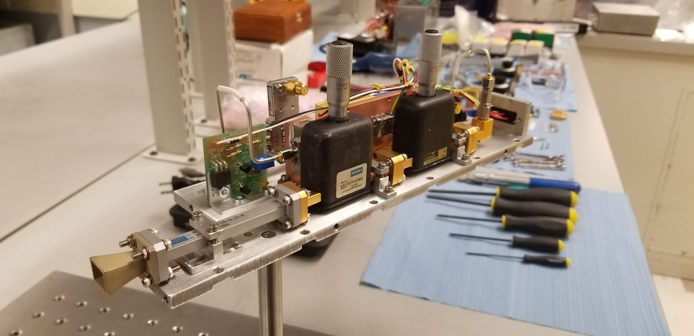
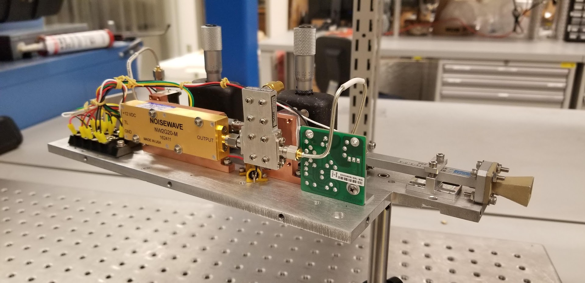
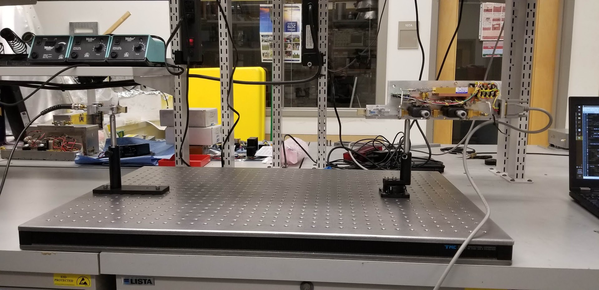
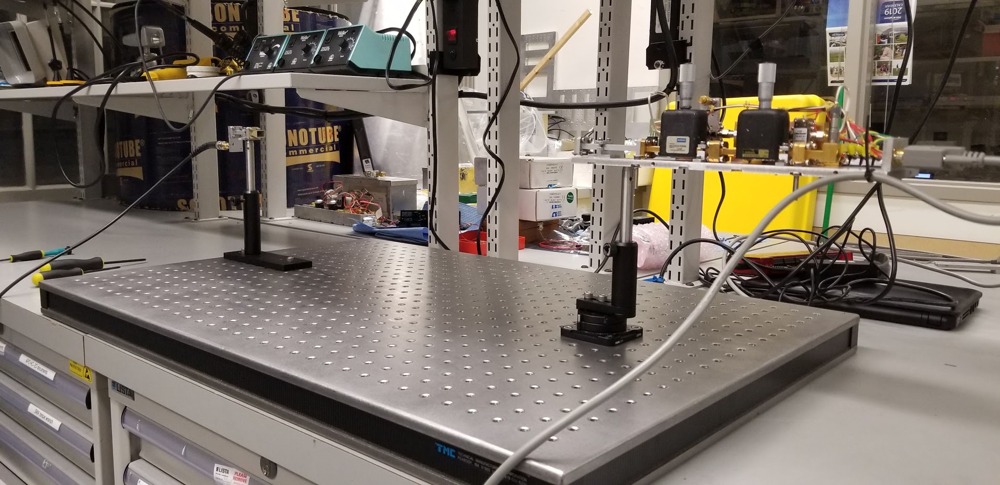
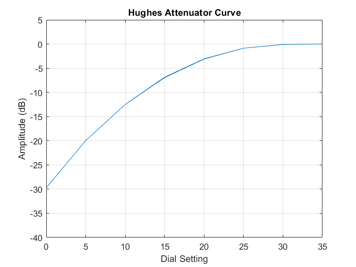
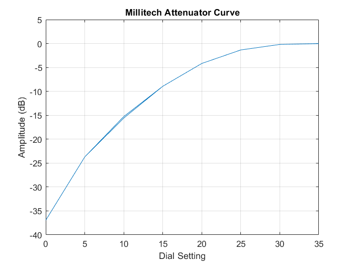

This posting provides an overview of the design and performance of the 30/40GHz BroadBand Noise Source (BBNS) for the calibration efforts which will be conducted on our 30/40 GHz BICEP Array receiver.
I used the same RF design scheme as our other sources where we amplify and chop the noise of relatively low frequency band (~10 GHz) which we then pass through a frequency multiplier to achieve the desirable output frequency. It was possible to start in the 30-40 GHz range, but the components for the aforementioned design are overall cheaper, easier to acquire, and are less sensitive to fluctations in temperature. The figure below shows a schematic of the RF chain I based my designs on.
Further, the new source was designed using the following guidelines acquired from the typical performance and lessons-learned of previous sources:
Following these guidelines should give us confidence that the source can be used for any of our beam mapping needs without modifying any existing calibration equipment.
Major design choices influenced by the established criteria:
*Due to a long lead-time with the high-pass filter, a diplexer is currently being used as the high pass filter.


Two notable differences in this design from its predecessors are the use of off-the-shelf components for the low-frequency noise source and the over-voltage protection circuitry. The noise source, designed by Noisewave, was chosen due to its built-in TTL switching, good impedance matching, and ability to output flat noise over a relatively broad band (DC-21GHz). This is in contrast to previous iterations of BBNS's where the low-frequency noise was produced by amplifying the Johnson noise of a $50\Omega$ termination via multiple gain blocks before being put through a seperate PIN switch which was prone to burning-out.
The over-voltage circuitry in our other sources were designed and fabricated in-house which was time-consuming, expensive and produced a relatively large footprint on the source chassis. The new protection circuit can be bought and shipped overnight from Digikey, has a small footprint, is quite cheap, and is also tunable from 6-34V.
Solidworks drawings for this BBNS can be found in the (user:polar, pass:g******w****).
| Source (GHz) | Output (dBm) | Atten. Range (dB) | Flatness (dB, pk-to-pk) |
|---|---|---|---|
| 30 / 40 | 13 | 65 | 6 / 14+ |
| 95 | 2.3 | 95 | - |
| 150 | -0.7 | 70 | 15 |
| 220 | -40 | 70 | - |
I measured the spectrum using an Agilent 3Hz-44GHz spectrum analyzer. In the figure below, I've overplotted the typical 30 and 40GHz band centers and widths given in and respectively. The spectrum is flat to $\pm3dB$ for the 30GHz band, but we're only illuminating about half of the 40GHz band.
For most other measurements, the output of the source was read out with a Pacific Millimeter KaD (26.5-40GHz) broadband detector diode via Lock-in amplifier with a chop frequency at 1KHz. For beam mapping, the BBNS and detector were secured to a portable optics bench 21" apart (the far-field for the source is 1.25"). The source was secured in a manual rotation stage which allowed me to rotate the source about vertical axis with about $\sim 1^\circ$ of precision. I then rotated the source from $-60^\circ$ to $60^\circ$ in increments of $5^\circ$, measuring the output of the lock-in amplifier where the uncertainty was $\sim0.05\%\,$ of the peak amplitude.


Fitting a simple 1-D Gaussian to the data, I estimated the amplitude, beam width and beam centers of each beam. I find that the width of the beam in the E-plane ($17.4\pm0.1^\circ$) is $7\%$ smaller than that of the H-plane ($18.6\pm0.1^\circ$).
Using the same setup mentioned in the beam mapping section, I measured the output of the source as I individually dialed in the attenuators via the lock-in amplifier. By combining both attenuators, we can achieve up to $65 \text{dB}$ of attenuation in source amplitude.


Both of our heater drivers are at pole, so I was unable check the source output stability under PID control. Instead, I measured the thermal dependence of the source output and, assuming 250K ambient temperature at pole, I determined the typical temperature stability we would need in order to achieve a stability of $1\%$ in source amplitude. I left the source running overnight and monitored its temperature while simultaneously measuring the source amplitude using a LabJack. The plot below shows the fluctation of source power as a function of source temperature. Assuming the gain scales linearly down to 250K, our target temperature fluctation should be $\sigma_T\lt 0.5K$ which, historically is quite achievable.